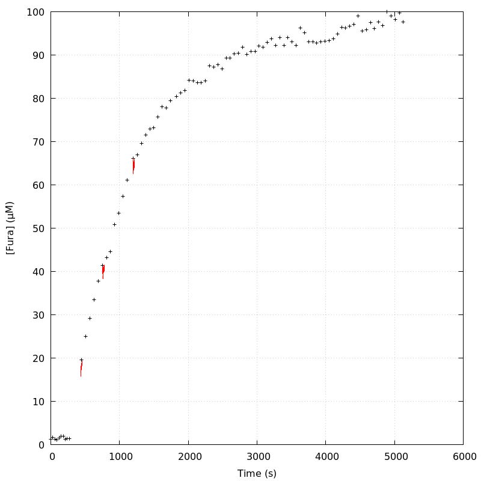
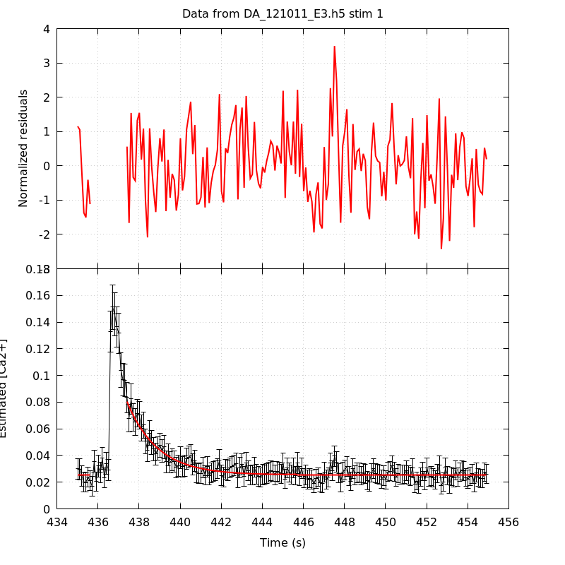
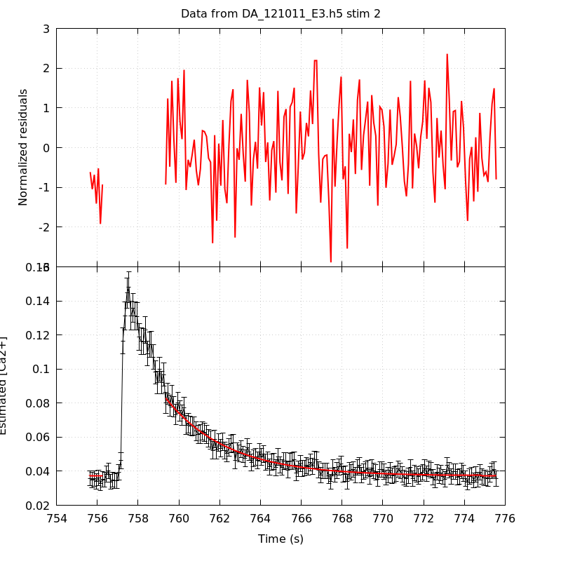
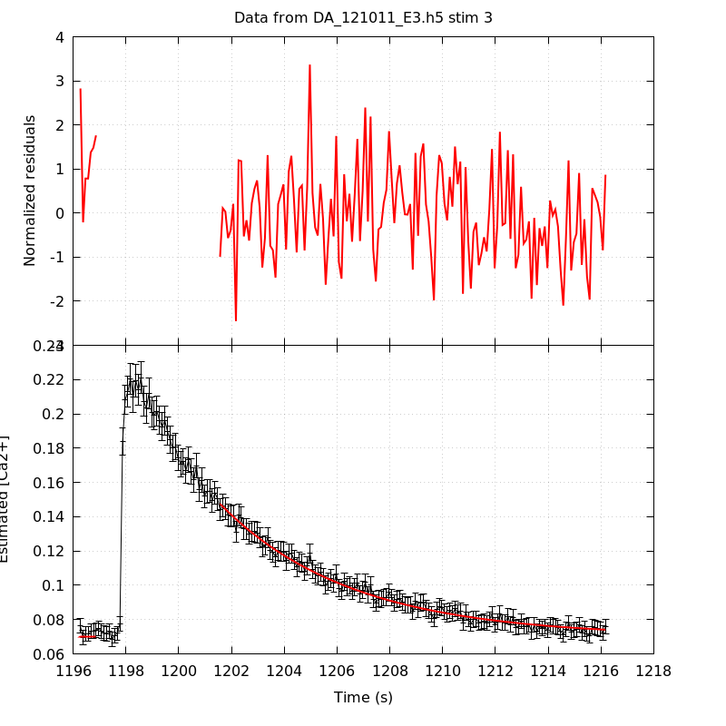
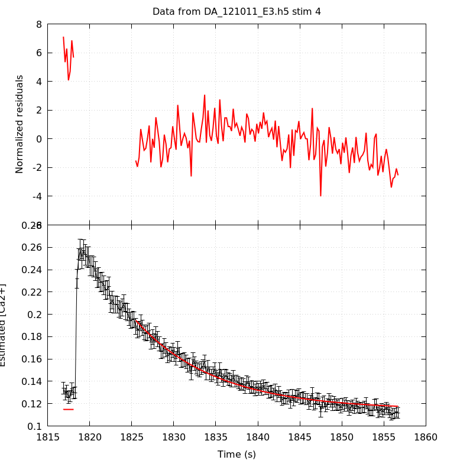
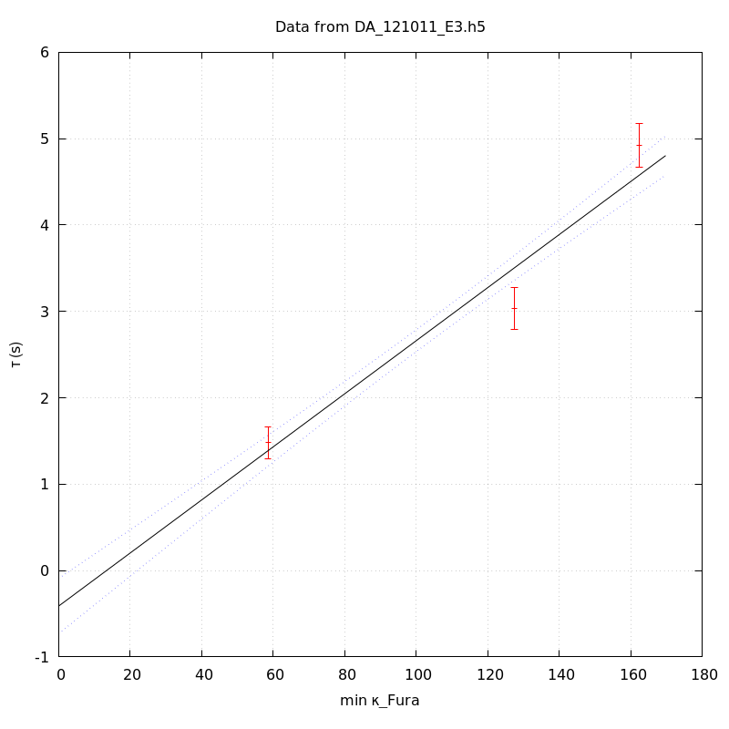
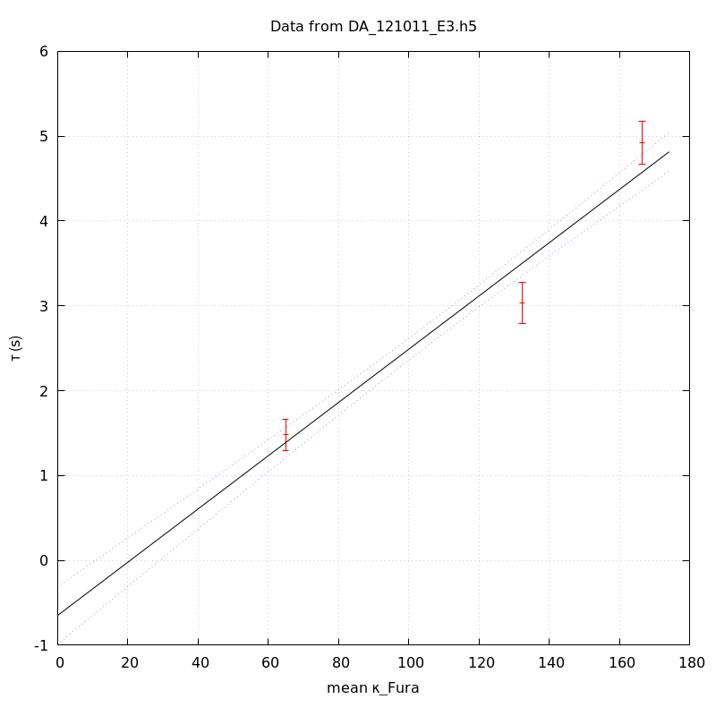
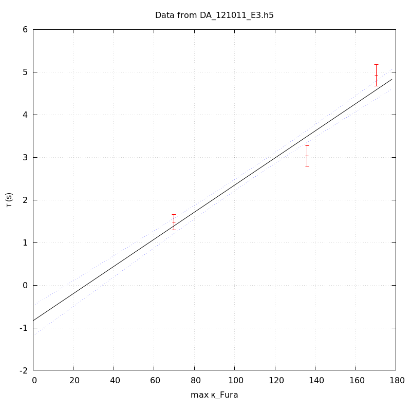

The baseline length is: 7.
When fitting tau against kappa_Fura only the transients for which the fit RSS and the lag 1 auto-correlation of the residuals were small enough, giving an overall probability of false negative of 0.02, were kept (see the numerical summary associated with each transient).
The good transients are: 1, 2, 3.
The time at which the 'good' transients were recorded appear in red.

On each graph, the residuals appear on top. Under the null hypothesis, if the monoexponential fit is correct they should be centered on 0 and have a SD close to 1 (not exactly 1 since parameters were obtained through the fitting procedure form the data.
The estimated [Ca2+] appears on the second row. The estimate is show in black together with pointwise 95% confidence intervals. The fitted curve appears in red. The whole transient is not fitted, only a portion of it is: a portion of the baseline made of 7 points and the decay phase starting at the time where the Delta[Ca2+] has reached 50% of its peak value.
The time appearing on the abscissa is the time from the beginning of the experiment.
Transient 1 is 'good'.

nobs = 183
number of degrees of freedom = 180
baseline length = 7
fit started from point 24
estimated baseline 0.0254829 and standard error 0.000329797
estimated delta 0.0549105 and standard error 0.0025399
estimated tau 1.47966 and standard error 0.0933651
residual sum of squares: 206.939
RSS per degree of freedom: 1.14966
Probability of observing a larger of equal RSS per DOF under the null hypothesis: 0.0823716
Lag 1 residuals auto-correlation: 0.147
Pr[Lag 1 auto-corr. > 0.147] = 0.036
Transient 2 is 'good'.

nobs = 170
number of degrees of freedom = 167
baseline length = 7
fit started from point 37
estimated baseline 0.0372288 and standard error 0.000316304
estimated delta 0.0457024 and standard error 0.00103654
estimated tau 3.03295 and standard error 0.122822
residual sum of squares: 178.923
RSS per degree of freedom: 1.0714
Probability of observing a larger of equal RSS per DOF under the null hypothesis: 0.250224
Lag 1 residuals auto-correlation: 0.056
Pr[Lag 1 auto-corr. > 0.056] = 0.210
Transient 3 is 'good'.

nobs = 154
number of degrees of freedom = 151
baseline length = 7
fit started from point 53
estimated baseline 0.070116 and standard error 0.000549546
estimated delta 0.0774127 and standard error 0.000869241
estimated tau 4.92475 and standard error 0.129902
residual sum of squares: 166.322
RSS per degree of freedom: 1.10147
Probability of observing a larger of equal RSS per DOF under the null hypothesis: 0.186317
Lag 1 residuals auto-correlation: 0.060
Pr[Lag 1 auto-corr. > 0.060] = 0.216
Transient 4 is a 'bad'.

nobs = 164
number of degrees of freedom = 161
baseline length = 7
fit started from point 43
estimated baseline 0.11465 and standard error 0.000567282
estimated delta 0.0799823 and standard error 0.000957125
estimated tau 9.52079 and standard error 0.268262
residual sum of squares: 494.079
RSS per degree of freedom: 3.06882
Probability of observing a larger of equal RSS per DOF under the null hypothesis: 1.59194e-35
WARNING: THE FIT IS NOT GOOD!
Lag 1 residuals auto-correlation: 1.759
Pr[Lag 1 auto-corr. > 1.759] = 0.000
Since the [Fura] changes during a transient (and it can change a lot during the early transients), the unique value to use as '[Fura]' is not obvious. We therefore perform 3 fits: one using the minimal value, one using the mean and one using the maximal value.
The observed tau (shown in red) are displayed with a 95% confidence interval that results from the fitting procedure and is therefore meaningful only if the fit is correct!
No serious attempt at quantifying the precision of [Fura] and therefore kappa_Fura has been made since the choice of which [Fura] to use has a larger effect and since the other dominating effect is often the certainty we can have that the saturating value (the [Fura] in the pipette) has been reached.
The straight line in black is the result of a weighted linear regression. The blue dotted lines correspond to the limits of pointwise 95% confidence intervals.

Best fit: tau = -0.410355 + 0.0307088 kappa_Fura
Covariance matrix:
[ +2.65741e-02, -2.17231e-04
-2.17231e-04, +2.10553e-06 ]
Total sum of squares (TSS) = 470.696
chisq (Residual sum of squares, RSS) = 22.8138
Probability of observing a larger of equal RSS per DOF under the null hypothesis: 1.78481e-06
R squared (1-RSS/TSS) = 0.951532
Estimated gamma/v with standard error: 32.5639 +/- 1.5387
Estimates kappa_S with standard error (using error propagation): -14.3628 +/- 5.34585
kappa_S confidence intervals based on parametric bootstrap
0.95 CI for kappa_S: [-23.0005,-4.20586]
0.99 CI for kappa_S: [-25.6815,-0.586103]

Best fit: tau = -0.648177 + 0.0313714 kappa_Fura
Covariance matrix:
[ +3.00629e-02, -2.38557e-04
-2.38557e-04, +2.19720e-06 ]
Total sum of squares (TSS) = 470.696
chisq (Residual sum of squares, RSS) = 22.7773
Probability of observing a larger of equal RSS per DOF under the null hypothesis: 1.81905e-06
R squared (1-RSS/TSS) = 0.951609
Estimated gamma/v with standard error: 31.8761 +/- 1.50614
Estimates kappa_S with standard error (using error propagation): -21.6614 +/- 5.61246
kappa_S confidence intervals based on parametric bootstrap
0.95 CI for kappa_S: [-30.0742,-11.4398]
0.99 CI for kappa_S: [-32.3528,-7.92428]

Best fit: tau = -0.833393 + 0.0318132 kappa_Fura
Covariance matrix:
[ +3.28969e-02, -2.54545e-04
-2.54545e-04, +2.25485e-06 ]
Total sum of squares (TSS) = 470.696
chisq (Residual sum of squares, RSS) = 21.85
Probability of observing a larger of equal RSS per DOF under the null hypothesis: 2.94814e-06
R squared (1-RSS/TSS) = 0.953579
Estimated gamma/v with standard error: 31.4335 +/- 1.48369
Estimates kappa_S with standard error (using error propagation): -27.1964 +/- 5.8338
kappa_S confidence intervals based on parametric bootstrap
0.95 CI for kappa_S: [-35.5953,-17.671]
0.99 CI for kappa_S: [-38.0829,-14.22]
3 out of 4 transients were kept.
sigma(tau): 0.0933651, 0.122822, 0.129902
Residual correlation at lag 1: 0.14694671702604067, 0.05643923435805149, 0.060061285757553075
Probablity of a correlation at lag 1 smaller or equal than observed: 0.03600000000000003, 0.20999999999999996, 0.21599999999999997
RSS/DOF: 1.14966, 1.0714, 1.10147